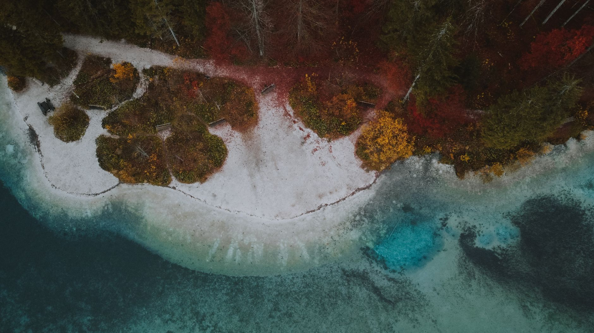

GIS & remote sensing
Spatial analysis, satellite image interpretation and mapping to understand environmental patterns and change.
GEOSPATIAL ANALYSIS
GIS / Remote sensing / Environmental analysis
I use geographic data to explore how landscapes change and how people interact with their environment.
My perspective
My background brings together a master's in GIS and remote sensing, a degree in human geography, and experience in marine, coastal and land-based projects.
Through Sigrøn, I'm developing independent projects and exploring new ways to use geospatial data.
More about meSpatial analysis, satellite image interpretation and mapping to understand environmental patterns and change.
GEOSPATIAL ANALYSISExperience across marine conservation, coastal environments, forests and landscape change, with clear maps and visual communication.
LAND, COAST & SEABuilding on training in drones in agriculture, LiDAR and photogrammetry to explore detailed terrain, vegetation and environmental mapping.
DRONE LIDAR & PHOTOGRAMMETRY ↗Selected professional work
Technical contribution at SALT
I worked on the technical side of this project, which explores how satellite observations can help monitor the environmental impacts of nature-based tourism.
More about my contributionTHE PROJECT QUESTION
Satellite imagery
Visitor, terrain & weather context
Environmental monitoring & management
Current explorations · Sigrøn
Independent projects exploring how geographic data can help us understand our local environment.
 Ongoing exploration
Ongoing explorationI'm exploring water quality and cyanobacteria in Goksjø, and how satellite data, maps and local observations can help identify patterns and follow changes over time.
Explore the project Project in development
Project in developmentI'm investigating how geospatial data can map light pollution, identify darker areas and help us understand natural darkness as an environmental quality.
Explore the projectAcademic research
My master's research used GIS and remote sensing to explore forest composition, moisture patterns and recovery after fire in Scandinavian boreal forests.
Explore the thesis MSc GIS & Remote Sensing · Ulster University
MSc GIS & Remote Sensing · Ulster UniversityLet's connect
I'm interested in work that connects geospatial analysis with environmental questions and practical decisions.
alexandrafjellvik@gmail.comSandefjord, Norway · +47 913 29 902